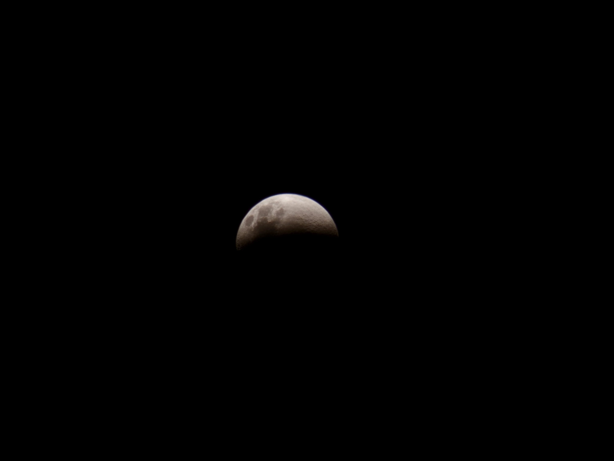

L’éclat des choses simples
Ce matin,
une tasse.
Une cuillère.
Le bruit d’un camion
dans la rue.
Une fenêtre entrouverte
sur un ciel sans événement.
La voisine étale
sa literie au soleil.
Un chien aboie
contre personne.
Un homme attend
ou n’attend rien.
Rien ne se passe.
Et pourtant
le monde entier
est là.
Dans la buée du café.
Dans un ticket froissé
au fond d'une poche.
Dans les chaussures
qui connaissent les chemins
mieux que nous.
La poésie ne vit pas
seulement dans les étoiles.
Elle habite aussi
les supermarchés,
les ascenseurs,
les bancs publics,
les poubelles sorties au matin.
Il suffit parfois
de regarder longtemps
ce que nous ne regardons plus.
Et soudain,
la banalité
se met à briller.
Djamel Metref
At Yenni le 19 Août 2026
← Tous les poèmes
L’éclat des choses simples
Beauté du quotidien · Écriture et poésie